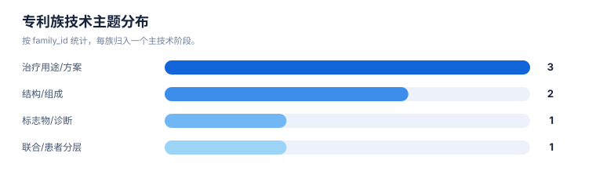
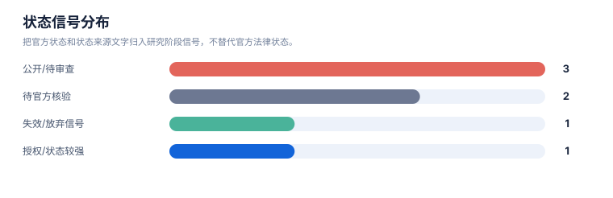

创新空间假设报告
案例：durvalumab-pdl1-nsclc · 生成时间：2026-08-07T09:49:32.719627+00:00 · 本报告为研究资料，不构成法律意见。
研究范围
研究对象：Durvalumab
靶点：PD-L1
适应症：non-small cell lung cancer (NSCLC)
目标法域：CN, US
关联法域：WO, EP
截至：2026-08-07
深度：standard_analysis
主要申请人：未提供（详情见执行摘要）
1. 使用原则
本报告只提出可验证的创新空间假设。空白表示当前检索集合、字段或法域没有建立充分证据，不表示不存在专利，也不表示可直接实施。
2. 假设总表
| 候选方向 | 关联族/缺口 | 已有依据 | 当前技术缺口 | 反例 | 验证动作 | 信心 |
|---|---|---|---|---|---|---|
| 核心实体的结构、序列、变体、盐型/晶型或选择性/安全窗 | DVL-FAM-001 | 核心组成/功能性 claim 记录提供边界 | anti-B7-H1/PD-L1 binding agent; human IgG1; Fc mutations; variable-region/sequence-defined antibody | Core composition family. WO2011066389A1 and US8779108B2 are related members/branches; do not treat each publication as a new invention. | 补检同族/官方 claim；必要时做结构、制剂、药效或生物标志物实验 | 中/待验证 |
| 联合治疗、给药顺序、周期、剂量和治疗线次 | DVL-FAM-002 | 用途/联合/方案族存在保护布局 | administer durvalumab and tremelimumab to PD-L1-negative NSCLC with high CD8+ tumor-infiltrating lymphocytes | Useful example of a biomarker-and-combination branch; claim scope and national status require direct claim/register review. | 补检同族/官方 claim；必要时做结构、制剂、药效或生物标志物实验 | 中/待验证 |
| 联合治疗、给药顺序、周期、剂量和治疗线次 | DVL-FAM-003 | 用途/联合/方案族存在保护布局 | 1000-2000 mg durvalumab plus platinum chemotherapy before surgery, resection, then adjuvant durvalumab; cycles and Q3W/Q4W regimen | Recent indication/regimen branch. National-phase members are explicit discovery signals, not conclusions that claims are live or equivalent. | 补检同族/官方 claim；必要时做结构、制剂、药效或生物标志物实验 | 中/待验证 |
| 联合治疗、给药顺序、周期、剂量和治疗线次 | DVL-FAM-004 | 用途/联合/方案族存在保护布局 | locally advanced unresectable stage III NSCLC; concurrent chemoradiation; durvalumab as PD-L1 inhibitor context | Indication-route expansion from consolidation to concurrent chemoradiation; verify independent claims and live status in CN/US. | 补检同族/官方 claim；必要时做结构、制剂、药效或生物标志物实验 | 中/待验证 |
| 制剂参数、赋形剂、浓度/pH、输注条件或稳定性窗口 | DVL-FAM-005 | 制剂/组合物族已进入样本 | antibody formulation; stabilizing excipients and concentration/pH-related formulation parameters | Included to show formulation-layer migration; it is not equivalent to a live durvalumab product patent. | 补检同族/官方 claim；必要时做结构、制剂、药效或生物标志物实验 | 中/待验证 |
| 联合治疗、给药顺序、周期、剂量和治疗线次 | DVL-FAM-006 | 用途/联合/方案族存在保护布局 | anti-TIGIT and anti-PD-L1 antagonist dosing; durvalumab appears in disclosure/context but applicant is a competitor | Competitive/pathway expansion, not counted as a durvalumab-specific core family until independent claims are confirmed. | 补检同族/官方 claim；必要时做结构、制剂、药效或生物标志物实验 | 中/待验证 |
| 患者分层、伴随诊断、反应预测和耐药/微环境标志物 | DVL-FAM-007 | 标志物/诊断族或邻近族提供入口 | gene-expression biomarker panels for response assessment in NSCLC immune-checkpoint blockade | Included as an adjacent biomarker-space signal; it demonstrates why resistance/biomarker searches need a separate relevance label. | 补检同族/官方 claim；必要时做结构、制剂、药效或生物标志物实验 | 中/待验证 |
| 拟实施方案的对象特异性权利要求边界 | GAP-CLAIM-LINKAGE | 当前样本已提供专利族和/或权利要求要素记录 | 尚需将拟实施特征与同一独立权利要求逐项关联：肿瘤免疫治疗监测，具体涉及 PD-L1 抑制剂度伐利尤单抗在非小细胞肺癌中的免疫相关不良反应风险评估。；度伐利尤单抗与 PD-L1 结合并阻断 PD-1/PD-L1 通路，以触发免疫相关不良反应的风险识别。；免疫系统在 PD-1/PD-L1 通路被阻断后对肺部正常组织、肠道黏膜或实质器官产生异常攻击，用于判定器官特异性毒性机制。；治疗期间对肺部体征进行连续监测，以识别免疫相关性肺炎的呼吸系统异常表现。 | 未建立关联不等于不存在相关专利或可自由实施 | 对高相关族制作 claim chart，并逐法域核验有效独立权利要求与状态 | 中/需法律复核 |
| 术语、别名与相邻实施方式补检 | GAP-TERM-EXPANSION | 案例词簇可作为可追溯的检索起点 | 需要覆盖案例声明的别名、译名、同义表达和相邻实施方式：度伐利尤单抗、非小细胞肺癌、PD-L1、阻断、免疫相关不良反应、器官受损 | 扩词命中不自动构成权利要求覆盖 | 在检索日志中记录扩词来源、检索式、纳排理由，并回到独立权利要求核验 | 低/需补检 |
统计可视化
打开 FTO 风格统计总览 · 图表由当前案例 CSV/JSON 自动生成。
专利族技术主题分布

统计口径：按 family_id 统计，每族归入一个主技术阶段。
权利要求类别分布

统计口径：按 claim-elements.csv 的 claim_category 记录数统计。
状态信号分布

统计口径：把官方状态和状态来源文字归入研究阶段信号，不替代官方法律状态。
3. 分维度空白检查
| 维度 | 当前样本信号 | 空白判定 | 建议 |
|---|---|---|---|
| 核心结构/序列/化合物 | 见核心组成或抗体/序列方向 | 需查 Markush、序列变体和子族 | 结构检索+独立 claim 对比 |
| 盐型/晶型/制剂/工艺 | 若有制剂族则存在分层布局 | 配方和状态需单独核验 | 做组成、工艺、稳定性和制剂 claim chart |
| 给药/剂量/联合 | 用途、组合和 regimen 族较易出现 | 时间、剂量、患者人群可能有边界 | 按治疗线次、周期、顺序和联合对象补检 |
| 患者分层/诊断 | 若案例包含标志物、诊断或分层特征，则可作为检索入口 | 对象特异性 linkage 可能不足 | 按案例词簇检索分层特征 + 研究对象 + 适应症 + claim |
| 机制、耐受性或安全窗 | 仅在案例特征或已命中文献中出现时单独分析 | 当前证据不足时不得借用其他疾病领域术语 | 建立案例专属词表、文献证据和专利族三联表 |
4. 不得越过的结论
- “没有检索到”只能说明当前检索范围没有建立证据。
- 空白机会必须经结构、药效/制剂/诊断实验和法律复核后才能进入研发决策。
- 任何方向都要重新检查未公开申请、国家阶段、分案/继续申请、Markush 和官方法律状态。